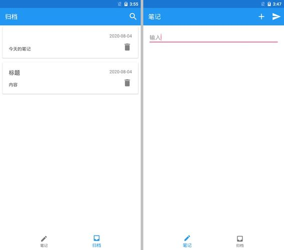

能用就行 👿
这篇主要是数据保存，使用LiteDB。
安装
- 在工程命令行下：
Install-Package LiteDB（没成功）或dotnet add <项目名称> package LiteDB --version 4.1.4（目前LiteDB.FSharp不支持 5.0+的LiteDB）或者下载复制dll文件。 - 安装LiteDB.FSharp:
dotnet add <项目名称> package LiteDB.FSharp --version 2.15.1。
注：
生成时出现了错误
错误 XA2002: 无法解析引用:
LiteDB，引用者为Endless。请为LiteDB添加 NuGet 包或程序集引用，或删除对Endless的引用。
可能是因为我用官方给的安装方法失败了，所以包没装完全。
解决方法：打开Nuget包管理器给 Android 包重装一遍库。
保存路径
新建一个文件来写数据库相关。
文件保存在 android 的应用专属文件目录中。利用dependency-service可以先定义一个接口然后分平台实现。(参照了这个实现吐司的方法：Toast equivalent for Xamarin Forms)
定义：
type IDataBasePath =
abstract member Path:unit->string
在 Android 文件夹下：
type DataBasePath()=
interface ELType.IDataBasePath with
member this.Path() = System.IO.Path.Combine(System.Environment.GetFolderPath(System.Environment.SpecialFolder.Personal), "mydata.db")
[<assembly: Xamarin.Forms.Dependency(typeof<DataBasePath>)>]
do()
最后使用的时候
open LiteDB
open LiteDB.FSharp
open Xamarin.Forms
let mapper = FSharpBsonMapper()
let path = DependencyService.Get<IDataBasePath>().Path()
let db = new LiteDatabase(path, mapper)
文档结构
LiteDB.FSharp库使用 records 组织结构。这里直接使用之前定义的ELEntry作为存储数据：
利用 ID 自增。
[<CLIMutable>]
type ELEntry= {
Id:int
Content:string
Date:string
}
之后添加的条目,需要自增的 id 填 0。
数据结构
type ELEntry= {
Id:int
Content:string
Date:System.DateTime
}
type Model = {
NowId:int
NowWrite:string
Data:seq<ELEntry>
}
消息有新建、打开、删除消息框、删除、反馈输入的文字、保存和切换 Tab 。
type Msg =
| NewEntry
| Open of int
| Delete of bool*int
| DeleteAlert of int
| NowWriting of string
| Save
| Switch of int
增删改查
先得到一个表。
let data = db.GetCollection<ELEntry>("entries")
- 增加：
data.Insert(newEntry) - 修改：
data.Upsert(newEntry)（新增或插入），data.Update(newEntry)。 - 查找：返回的数据类型是
seq<类型>。所以 Model 中的 Data 为seq<ELEntry>型。- 查找全部：
data.FindAll() - 按 id 查找:
data.FindOne(fun data->data.Id=id)
- 查找全部：
- 删除：
- 按 id 删除：
data.Delete id
- 按 id 删除：
例
-
输入的时候，数据保存到
model.NowWrite中。对应
type Msg的消息类型NowWriting。在视图的 Editor 中，每当输入文字时发送消息。View.Editor (text = model.NowWrite, textChanged = (fun text -> dispatch (NowWriting text.NewTextValue) |> ignore), <略>)处理方法：
match msg with | NowWriting str -> { model with ELType.NowWrite = str }, Cmd.none | <略> -
保存的时候，更新数据库。
//输入界面 View.NavigationPage (icon = penImg, title = "笔记", toolbarItems = [ View.ToolbarItem(icon = saveImg, command = (fun()-> dispatch Save) ) ], <略>) //update match msg with | Save -> let newEntry = { Content = model.NowWrite Date = System.DateTime.Today Id = model.NowId } ELDb.upsert (newEntry) |> ignore { model with NowWrite = "" Data = ELDb.data.FindAll() }, Cmd.none
最后的效果

其他
-
实际写的时候发现设计没做好，还需要一个“新建”按钮和“删除”按钮。新建的时候将 ID 置 0。（又回去改第一篇博文 😓）
-
异常处理没做
-
打包出来 20M，下次写 flutter。
参考：